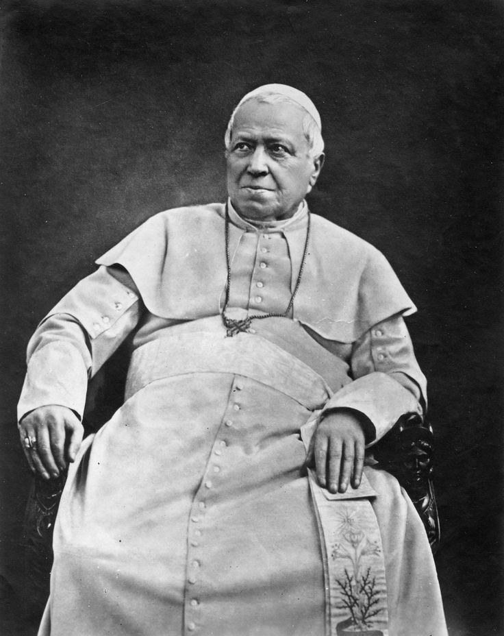
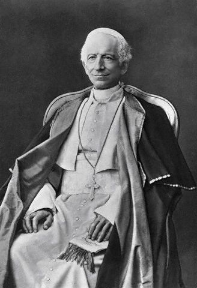
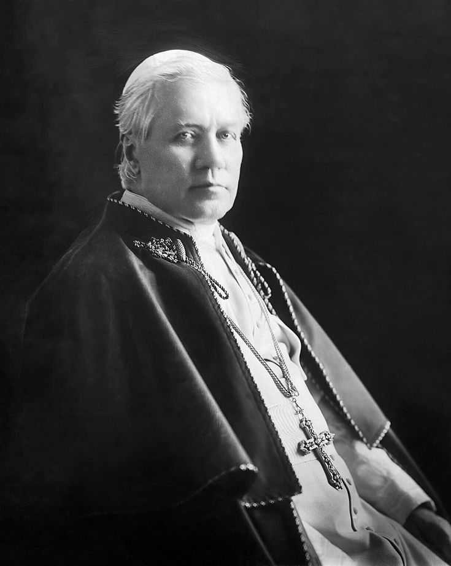
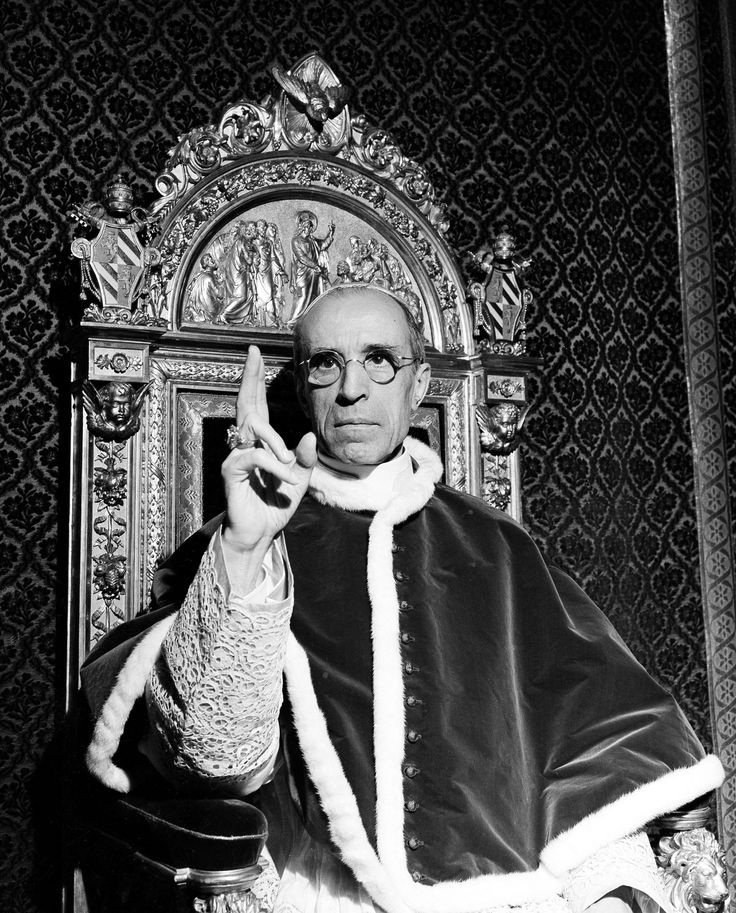

A Fortaleza da Fé Contra os Erros do Mundo Moderno: De Pio IX a Pio XII




Para quem não estuda a história interna da Igreja, o termo Modernismo pode parecer algo positivo, associado a progresso ou avanço tecnológico. No entanto, no contexto da história religiosa da virada do século XIX para o século XX, ele representou um movimento filosófico e teológica que tentava alterar drasticamente o coração do Catolicismo. A ideia central do modernismo era a de que as verdades espirituais e os dogmas tradicionais deveriam mudar e evoluir de acordo com a moda, o pensamento científico secular e a política de cada época, tornando a fé algo relativo.
A reação da liderança católica contra o chamado "espírito revolucionário" foi rígida e implacável. Os Papas desse período enxergaram que essa tendência tentava esvaziar o sentido da religião por dentro. A linha de defesa teve início histórico com o Papa Pio IX, que bateu de frente contra as revoluções liberais na Europa e a perda dos territórios do Vaticano, e seguiu firme ao longo de mais de um século com seus sucessores Leão XIII, São Pio X, Pio XI e Pio XII, todos focados em manter a rigidez da fé imutável.
As Encíclicas são, de forma simples, grandes cartas oficiais escritas diretamente pelos Papas e distribuídas para os bispos e fiéis do mundo inteiro. Para o público geral, a importância histórica desses documentos é gigantesca: eles funcionam como o registro definitivo de momentos marcantes da humanidade, mas sob o ponto de vista estrito e milenar da Igreja Católica.
Enquanto o mundo secular passava por transformações profundas como revoluções industriais, grandes guerras mundiais, a ascensão do comunismo e novos pensamentos filosóficos, a Igreja utilizava as encíclicas como um "freio de mão". O objetivo era claro: provar que, embora as sociedades mudem e as correntes ideológicas passem, as diretrizes teológicas e morais do catolicismo deveriam permanecer fixas e resistentes a qualquer pressão externa, servindo como uma testemunha intocável do tempo.
O pontífice que governou por mais tempo na era moderna. Ele inaugurou a oposição aberta às ideologias revolucionárias e ao liberalismo radical através do Syllabus, um catálogo detalhado que condenava os erros do mundo moderno.
Famoso por sua alta capacidade intelectual, utilizou a filosofia de São Tomás de Aquino como escudo acadêmico contra o relativismo. Escreveu também cartas fundamentais alertando sobre os perigos da Maçonaria.
Considerado a figura central do combate direto. Publicou o documento mais agressivo contra os intelectuais modernistas infiltrados, definindo o movimento como a "síntese de todas as heresias" na carta Pascendi.
Atuou no período entre a Primeira e a Segunda Guerra Mundial. Defendeu energicamente a autonomia da Igreja contra os totalitarismos modernos da época e combateu o avanço do falso ecumenismo e do relativismo entre as religiões.
Conduziu a Igreja durante a Segunda Guerra Mundial e o início da Guerra Fria. Blindou a liturgia tradicional e a teologia clássica contra as novas correntes intelectuais do pós-guerra, encerrando este ciclo de forte conservadorismo.
Para entender a gravidade dessa batalha, é preciso compreender por que o relativismo modernista é nocivo por sua própria natureza. Esse movimento não surgiu do nada; ele herda as raízes de pensamentos muito mais antigos, como a filosofia de Immanuel Kant, que defendia que o ser humano não é capaz de conhecer as verdades absolutas por fora, mas apenas aquilo que ele sente interiormente. Ao transferir a religião do campo das verdades reais para o campo dos "sentimentos pessoais", o modernismo desassocia totalmente o ser humano de um Deus real.
O grande perigo disso é puramente lógico: se a verdade é relativa e cada pessoa possui o seu próprio "Deus interno" particular, a conclusão matemática inevitável é a de que Deus não existe por si mesmo. Ele passa a ser apenas uma criação da mente humana. Esse pensamento arranca o amparo espiritual intrínseco do ser humano — que é naturalmente religioso — e abre as portas para o ateísmo e o vazio existencial.
Essa quebra com o sagrado pavimentou o caminho para os grandes males estruturais da sociedade contemporânea. A Revolução Industrial e o avanço técnico desenfreado trouxeram consigo um materialismo agressivo, onde o homem passou a valer apenas pelo que produz. Desse materialismo puramente focado no mundo físico e econômico, nasceram correntes destrutivas como o Comunismo, o Socialismo e o Liberalismo desenfreado. Foi justamente esse cenário de degradação humana e espiritual que o Papa Leão XIII enfrentou e condenou de forma vigorosa, mostrando que quando a sociedade abandona as verdades eternas de um Deus eterno, ela se torna escrava de suas próprias ideologias materiais.
Selecione um Papa para filtrar os documentos históricos ou gerencie o acervo em tempo real utilizando os comandos do script.